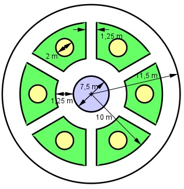

Aufgabe 190 Ein Gartenplaner macht den dargestellten Vorschlag. Wie viel Platz braucht er dafür? Wie viel Steine braucht man für die Wege und Umrandung bei 55 Steinen/m2? Wie groß ist die Blumenbepflanzung? Wie viel g Grassamen braucht man bei benötigten 15 g/m2? Der Teich in der Mitte ist 60 cm tief und ist bis 5 cm unter der Oberkante gefüllt. Wie viel m3 Wasser sind nötig?

Rasen = grüne Flächen Blumenbeete = gelbe Flächen Verbindungswege von außen nach innen = Rechtecke Benötigter Platz ist der komplette Kreis. A = π * r2 = π * 11,52 m2 = 415,3 m2 AW = innerer Ring+äußerer Ring + 6*Verbindungsweg Innerer Ring = π * (52 m2 - 3,752 m2) = 34,3 m2 Äußerer Ring = π * (11,52 m2 - 102 m2) = 101,3 m2 6 * Verbindungsweg = 6 * (10 m – 5 m) * 1,25 m = = 37,5 m2 AW = 34,3 m2 + 101,3 m2 + 37,5 m2 = 173,1 m2 benötigte Steine = 173,1 m2 * 55 Steine/m2 = = 9520,5 --> 9 521 Blumenbepflanzung AB = 6 * Blumenbeet AB = 6 * π * 12 m2 = 18,8 m2 Teichfläche AT= π * 3,752 m2 = 44,2 m2 Rasenfläche AR = A – AW – AR - AT AR = 415,3 m2 - 173,1 m2 - 18,8 m2 - 44,2 m2 = = 179,2 m2 Menge an Grassamen M = 179,2 m2 * 15 g/m2 = = 2 688 g VWasser = AT * h = 44,2 m2 * 0,55 m = 24,3 m3